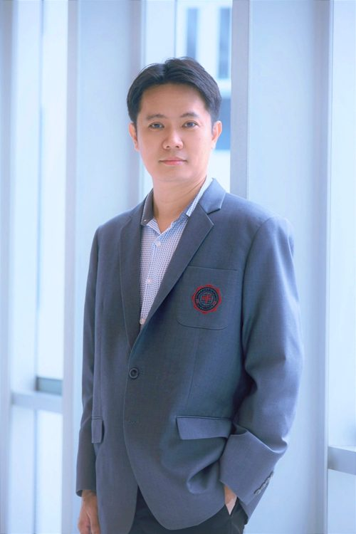

Contact Us
Contact Us
ติดต่อคณะ
ที่อยู่ เบอร์โทร อีเมล และช่องทางติดต่อแยกตามเรื่อง
Faculty Office
Faculty of Business Administration for Society
คณะบริหารธุรกิจเพื่อสังคม มศว
Getting Here
How to Get Here
การเดินทาง
BTS · รถไฟฟ้าบีทีเอส
ลงสถานีอโศก แล้วเดินเข้าซอยสุขุมวิท 23 ประมาณ 10 นาที
MRT · รถไฟฟ้าใต้ดิน
ลงสถานีสุขุมวิท แล้วเดินเข้าซอยสุขุมวิท 23 ประมาณ 10 นาที
Bus · รถประจำทาง
สายที่ผ่านถนนสุขุมวิทและถนนอโศกมนตรี ลงป้ายแยกอโศก
Parking · ที่จอดรถ
ที่จอดรถภายในมหาวิทยาลัยมีจำนวนจำกัด แนะนำให้เดินทางด้วยระบบขนส่งสาธารณะ
Contact by Topic
Who to Contact
ติดต่อตามเรื่องที่ต้องการ
เลือกเรื่องที่ต้องการติดต่อ เพื่อส่งถึงผู้รับผิดชอบโดยตรง — เรื่องทั่วไปใช้เบอร์และอีเมลกลางของคณะด้านบน
Admissions & Programmes
การรับสมัครและหลักสูตร
Student & Alumni Affairs
กิจการนิสิตและศิษย์เก่า
International & Communications
วิเทศสัมพันธ์และสื่อสารองค์กร
 ดร.สยาม ประเสริฐกุลผู้ช่วยคณบดีฝ่ายวิเทศสัมพันธ์และสื่อสารองค์กร
siamp@g.swu.ac.th
ดร.สยาม ประเสริฐกุลผู้ช่วยคณบดีฝ่ายวิเทศสัมพันธ์และสื่อสารองค์กร
siamp@g.swu.ac.th
Research & Academic Services
วิจัยและบริการวิชาการ

ผศ.ดร.คมกริช นันทะโรจพงศ์รองคณบดีฝ่ายแผนและพัฒนาองค์กร / รักษาการแทนผู้ช่วยคณบดีฝ่ายวิจัย khomkrit@g.swu.ac.thSocial Engagement & Partnerships
พันธกิจสัมพันธ์เพื่อสังคม
Administration & General Affairs
งานบริหารและธุรการ
Integrity & Transparency
ITA / Work Manual
ITA / คู่มือการปฏิบัติงาน
เอกสารการประเมินคุณธรรมและความโปร่งใส (ITA) คู่มือสำหรับนิสิต และคู่มือการปฏิบัติงานของคณะ — ไฟล์ PDF เผยแพร่บนเว็บไซต์คณะ (bas.swu.ac.th)
ITA Disclosures
ITA Documents
เอกสารเผยแพร่ ITA
ปีงบประมาณ พ.ศ. 25693 ไฟล์
ปีงบประมาณ พ.ศ. 25682 ไฟล์
ปีงบประมาณ พ.ศ. 25673 ไฟล์
ปีงบประมาณ พ.ศ. 25663 ไฟล์
ประมวลจริยธรรมและเอกสารอ้างอิง6 ไฟล์
- ขั้นตอนการจัดการเรื่องร้องเรียน (PDF เปิดในแท็บใหม่)
- ประมวลจริยธรรมข้าราชการพลเรือนในสถาบันอุดมศึกษา บุคลากรและผู้ปฏิบัติงานอื่นในสถาบันอุดมศึกษา (PDF เปิดในแท็บใหม่)
- ประมวลจริยธรรมของนายกสภามหาวิทยาลัย กรรมการสภามหาวิทยาลัย ผู้บริหาร ผู้ปฏิบัติงานและผู้เรียน พ.ศ. 2565 (PDF เปิดในแท็บใหม่)
- คู่มือจริยธรรมของมหาวิทยาลัยศรีนครินทรวิโรฒ (PDF เปิดในแท็บใหม่)
- คู่มือการประเมินคุณธรรมและความโปร่งใสฯ (ITA) ปีงบประมาณ พ.ศ. 2567 (PDF เปิดในแท็บใหม่)
- คู่มือการประเมินคุณธรรมและความโปร่งใสฯ (ITA) ปีงบประมาณ พ.ศ. 2566 (PDF เปิดในแท็บใหม่)
Manuals
Work Manuals
คู่มือนิสิต · คู่มือการให้บริการ · คู่มือปฏิบัติงาน